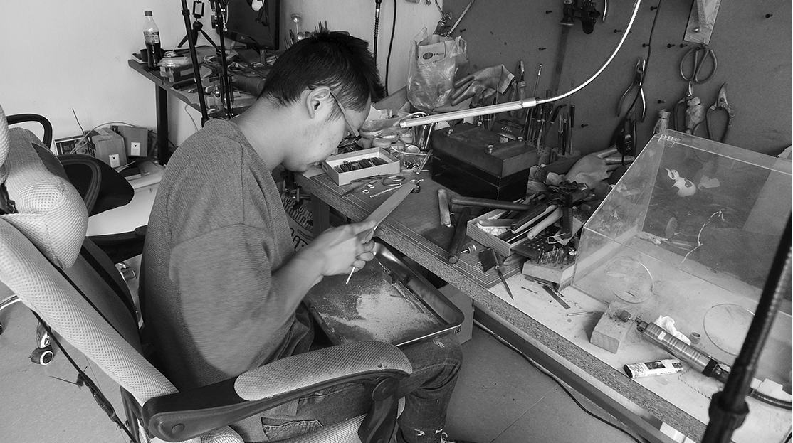
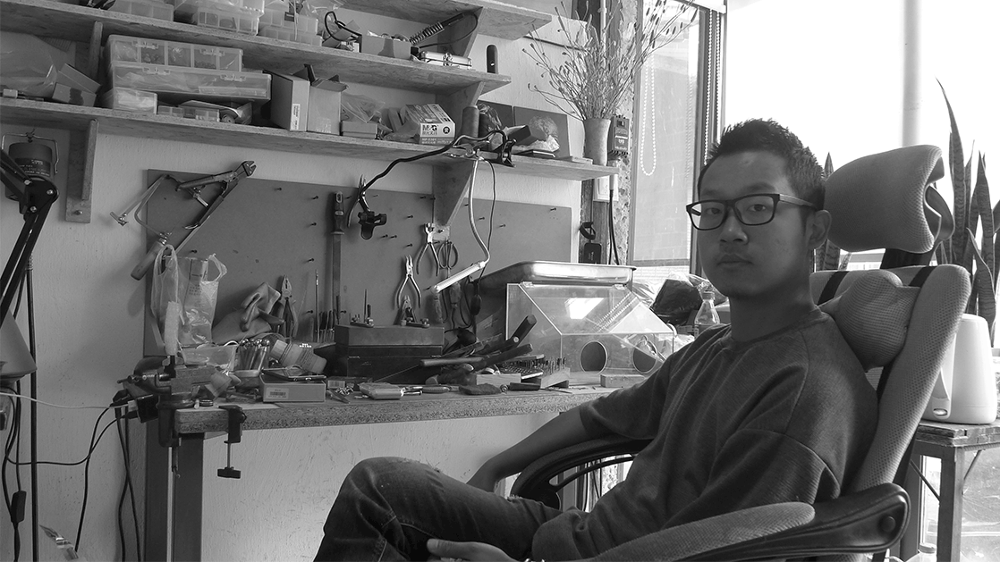
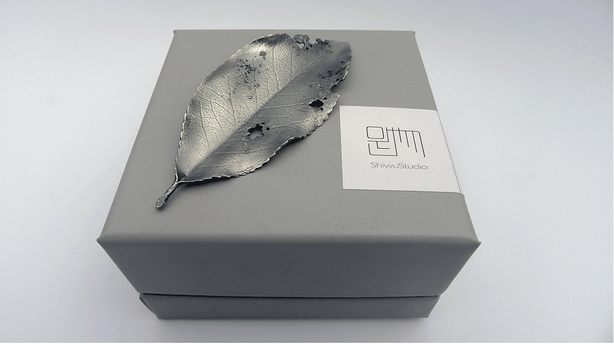

自分が欲しいものをつくりたい
Interview Time： 2017.08.19｜ People： Xiaolu
美大を卒業した外来の職人。

鶴慶は、卒業作品を制作するため、２０１３年初めて来ました。
13年暑假，我当时是跟我一个朋友来的，我们学校里壁画系的老师跟他过来玩，我记得很清楚是九八月1号到了这里，然后就我一来这边就感觉对这边很感兴趣，我之前就是对于他们的这个工艺文化很感兴趣。当然还有主要生活的气息，还有对自然环境。然后开始准备着手做自己的毕业设计，这边的资源很多，可以比较方便的做出来。

自由な雰囲気と綺麗いな空気！
创作过一段时间开始问题对，但是我我我不在意这些，嗯嗯会不会觉得学校还是有点教条或者是太正统了，还是有时候会影响自己的创作，其实我也不是说不受影响，自己的创作主要怎么说我觉得环境这种学校这种环境我觉得对我来说挺压抑的，嗯压抑的环境学校会有优惠，这边这边就不看，这个天你都觉得很开心的，天天看蓝天，然后再自己种的东西，这种状态确实很享受。

ここの職人さんに勉強しながら、自分のブランドを作りました。
这边的手艺人都很厉害，我有很多想法都可以跟他们商量。做东西的话很快。当然也有一部分是为了更好的创作。所以开始做自己的品牌然后放到网上去销售。现在经常会跟他们一起合作出一些东西。也在想让人帮着推广一下。觉得做这个事挺有意思的，如果有各种各样的朋友来可能会更好。